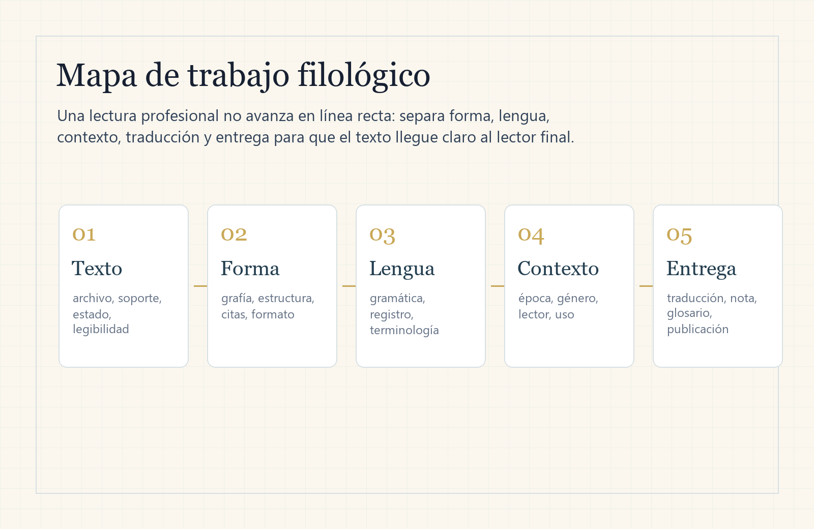

Servicios
Traducir o localizar
Documentos, sitios web, interfaces y contenidos que deben funcionar para otro lector o mercado.
Explorar servicios
Traducción · Localización · Filología aplicada
Precision Across Languages
Textos académicos, comerciales y culturales trabajados con contexto, terminología consistente y entregables definidos antes de comenzar.
Elige una ruta
La evaluación inicial determina viabilidad, formato, revisión y entrega. No es necesario enviar documentos sensibles para empezar.
Documentos, sitios web, interfaces y contenidos que deben funcionar para otro lector o mercado.
Explorar servicios
Transliteración, comentario y material educativo con fuentes y límites de interpretación visibles.
Ver enfoqueClases introductorias, guías, plantillas y recursos para traducción y lectura lingüística.
Ver cursos y materialesServicios
Otros pares de idiomas o áreas especializadas solo se aceptan después de confirmar competencia, fuentes y nivel de revisión.
Textos académicos, empresariales, editoriales y generales con terminología y formato acordados.
Por palabra o proyectoLanding pages, interfaces, fichas de producto, ayuda y microcopy adaptados al contexto de uso.
Por pantalla o loteResúmenes, terminología, estructura y revisión lingüística sin sustituir la autoría ni garantizar aceptación.
Por alcanceMuestras breves y materiales educativos con separación entre original, transliteración, traducción y comentario.
Uso educativoMétodo Scriptorium
Esta lectura reduce errores de alcance y deja claro qué se revisa en cada proyecto.
Se revisan soporte, legibilidad, extensión, citas, tablas, imágenes y estado editable.

Tu proyecto
Revisamos idiomas, público, extensión y formato.
Acordamos precio, fecha, archivos y revisiones por escrito.
Resolvemos dudas de terminología y contexto contigo.
Recibes los archivos acordados y las notas pertinentes.
Textos históricos
La línea histórica se ofrece para estudio, anotación, transliteración y divulgación. Cada encargo debe indicar fuente, edición utilizada, convención de transliteración y revisión especializada cuando corresponda.

Dirección del estudio
Scriptorium está dirigido por Josue Puglla, desde Ecuador. Trabajamos en traducción, localización y materiales educativos con atención al lector y al uso final de cada texto.
La formación del fundador en psicología aporta una base en lectura académica y documentación de investigación. La viabilidad de cada encargo se confirma antes de contratar. Consultar formación y alcance profesional.
Antes de solicitar
No. Español e inglés son la ruta inicial. Otros pares se confirman únicamente después de revisar competencia, disponibilidad y necesidad de un segundo revisor.
No. Cuando el trámite exige traductor acreditado, firma, sello o certificación oficial, el servicio debe derivarse a un profesional habilitado.
Primero envía una descripción o un fragmento anonimizado. Los archivos sensibles solo deben compartirse después de acordar canal, finalidad, acceso y conservación.
Después de revisar idiomas, extensión, formato y uso final, recibirás una propuesta con precio, fecha y revisiones incluidas. El trabajo comienza una vez aceptadas las condiciones.
Solicitar evaluación
El formulario prepara un correo en tu dispositivo; este sitio no almacena la información ni recibe adjuntos. También puedes iniciar la conversación por WhatsApp o Fiverr.
Antes de escribir, revisa el aviso de privacidad y las condiciones del servicio.